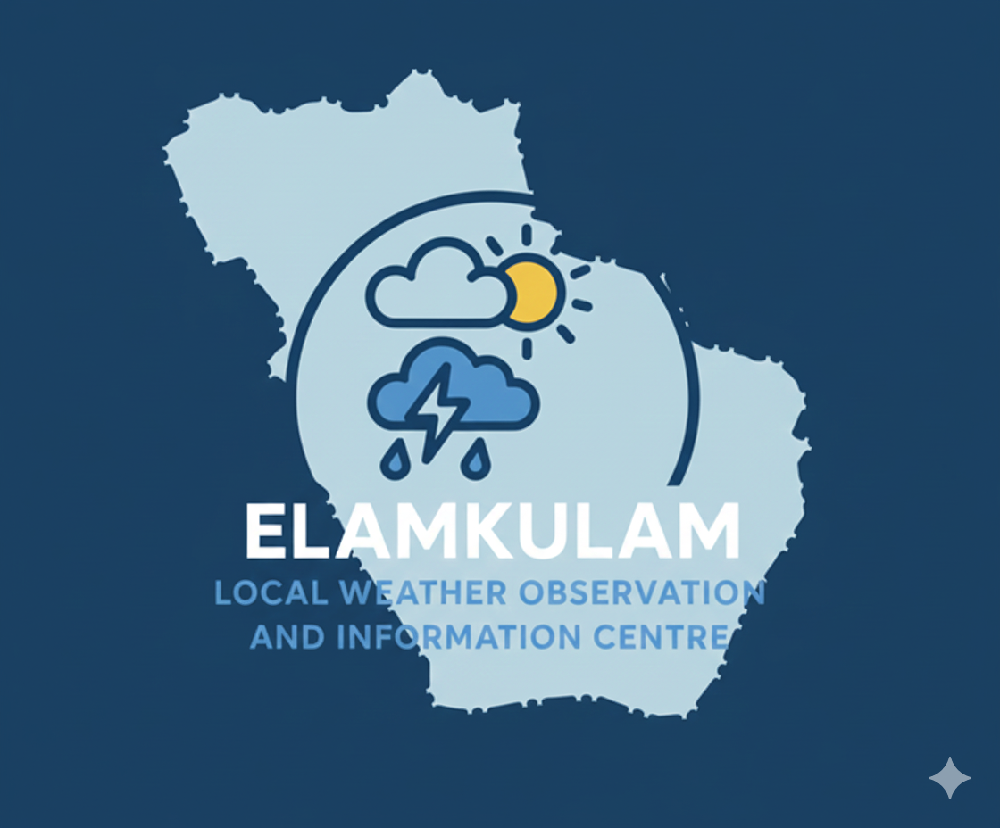

Elamkulam Local Weather Observation & Information Centre
Information About ELWOIC

Real-Time Weather Monitoring System
Malappuram District, Kerala, India
In coordination with House Public Board Department (HPBD)
Coordinates: 10.908°N, 76.229°E
ELWOIC (Elamkulam Local Weather Observation & Information Centre) is a student-run community project dedicated to providing near real-time local weather information for Elamkulam, Kerala.
A house-owned operating board established in 2023.
Helps run the house systematically and without collisions.
Coordinates with ELWOIC for smooth operation
(Head Office located in the same building).
Head Office Coordinates: 10.8923431009004°N, 76.23438262663473°E